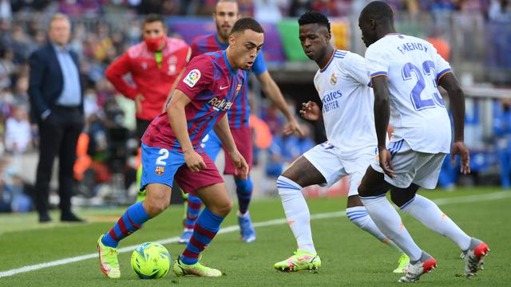
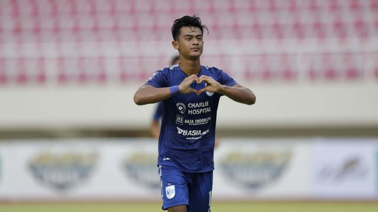

Artikel Terkini
Ditulis Oleh DioVanny, pada 20 januari 2022
Liga Spanyol
Bola.com, Jakarta - Barcelona tak terkalahkan dalam 10 pertandingan terakhir di Liga Spanyol, sejak takluk 0-1 dari Real Betis, awal Desember 2021. Level produktivitas Barcelona dalam menjebol jala lawan juga sudah berangsu pulih. Selanjutnya
BRI Liga 1
Bola.com, Jakarta - "Adek, sekarang kamu sudah menjadi pesepak bola terkenal dan punya reputasi tinggi. Ibu tak bisa memberikan apa-apa, kecuali doa. Sekarang, adek sudah berlabel pemain Timnas Indonesia, sesuatu yang menjadi mimpi sejak kecil. Jadilah tetap seseorang yang beretika, rendah diri dan jangan lupa, jaga sholat lima waktu," Selanjutnya
Liga Spanyol
Bola.com, Jakarta - Barcelona tak terkalahkan dalam 10 pertandingan terakhir di Liga Spanyol, sejak takluk 0-1 dari Real Betis, awal Desember 2021. Level produktivitas Barcelona dalam menjebol jala lawan juga sudah berangsu pulih. Selanjutnya